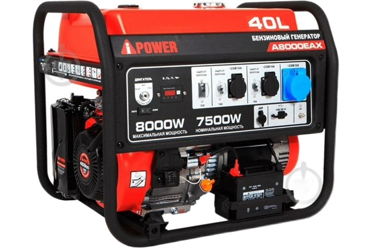
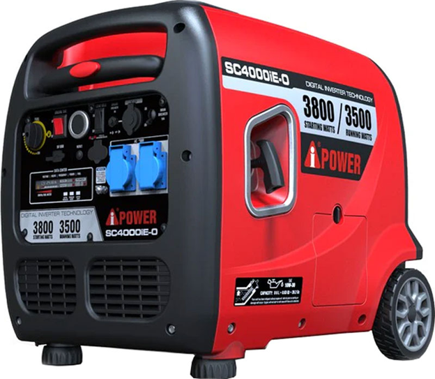
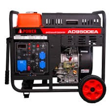

Бензинові генератори
Це найбільш популярний тип генераторів для домашнього використання завдяки їх мобільності та доступній ціні.
Детальніше про характеристики бензинових моделей.
Це найбільш популярний тип генераторів для домашнього використання завдяки їх мобільності та доступній ціні.
Детальніше про характеристики бензинових моделей.

Призначені для тривалої роботи та великих навантажень. Відрізняються високим ресурсом двигуна.
Дізнатися більше на характеристики дизельних моделей.
Виробляють "чистий" струм зі стабільною синусоїдою, що ідеально підходить для чутливої електроніки (ноутбуків, котлів).
Переглянути характеристики інверторних моделей.

Здатні витримувати високі пускові токи, що важливо для роботи з електроінструментами та насосами.
Більше про характеристики синхронних моделей.
